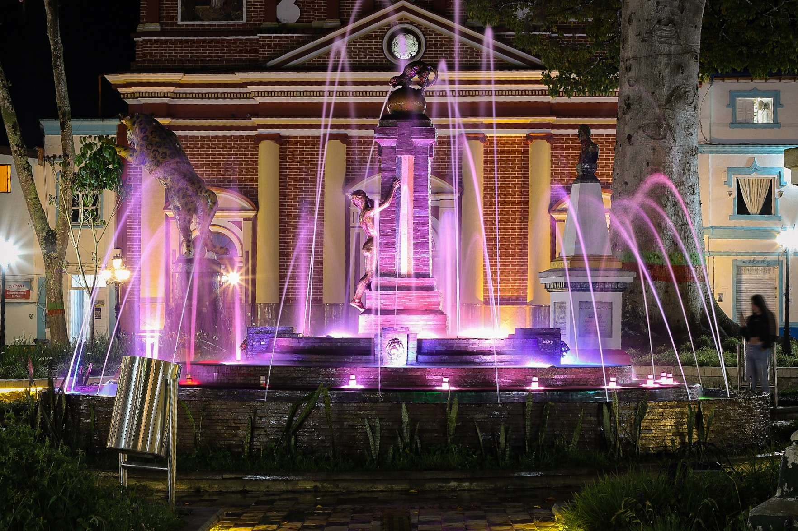
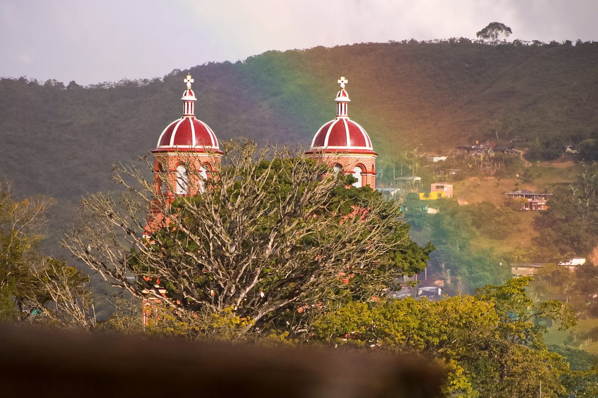

En nuestro municipio se pueden encontrar variedad de fauna silvestre desde todo tipo de aves, jaguareté (pertenece a la familia de Jaguar), hace poco se rescató por parte de corantioquia la primer ocelote albina de colombia y fue en nuestras tierras, conenjos salvajes, guaguas y gran variedad de anfibios